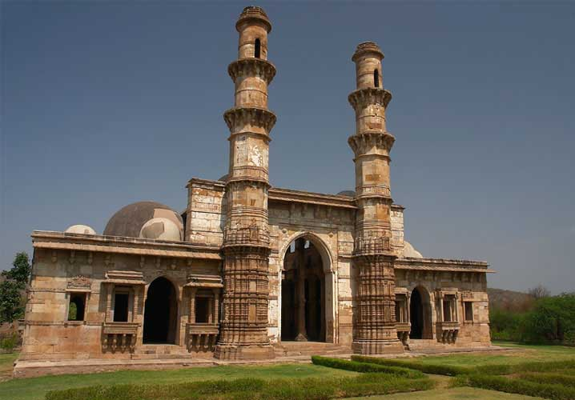

Many great cities of antiquity around the world were the center of their civilization for centuries, only to be lost to the ages, and then rediscovered centuries or millennia later, reduced to rubble and ruins, with only the largest structures still standing, and the rest mere shadows. Other cities continued to grow and change, leading to eclectic mixes of thousand-year-old forts and temples, medieval streets and markets, government buildings put up by colonial powers, and modern high-rises, offices and strip malls cluttering everywhere in between. But there are not many places in the world that went from being a small place of moderate importance to being the capital of the kingdom to being almost entirely deserted and nearly lost to the wilderness within a century, and in such recent history (a mere 500 years ago.)

Champaner is just such a place. Here you can find an old palace, fort, several mosques, but also walk the ancient streets just as its inhabitants did five centuries ago. Champaner was an out-of-the-way pilgrimage site for hundreds of years, became the capital of Gujarat, and was then abandoned to be overtaken by the jungle. The city rose and fell almost as fast as the modern stock market, but left behind far more aesthetic remains. The city is remarkably well-preserved, with Hindu and Jain temples a thousand years old, mosques from the time of the Gujarat Sultanate, and the whole workings of a well-planned capital city still in evidence, from granaries and fortifications to stepwells and cemeteries. Champaner became a UNESCO World Heritage Site in 2004.
Champaner was founded in the 8th century by King Vanraj Chavda of the Chavda Kingdom. Some attribute the name “Champaner” to his desire to name the city after his friend and minister Champa, while others say it comes from the igneous rocks of Pavagadh, whose light yellow color tinged with red gives the appearance of the champaka, or “flame of the forest” flower. The city and surrounding state of Pavagadh became an important buffer area between Mandu and Gujarat, as well as a key station on trade routes leading from Gujarat to both North and South India. Pavagadh and the city of Champaner were captured by the Chauhan Rajputs around 1300 AD, and they ruled the area for almost the next two hundred years.
Though many of the Gujarat Sultans had attempted to capture Pavagadh, for the strategic reasons mentioned above, it was Mahmud Begda who succeded in 1484, after laying siege to the city for twenty months. He renamed the city Muhammadabad, spent 23 years renovating and enhancing the city, and moved his capital there from Ahmedabad. Champaner’s time as capital was not long, however, as the Mughal Emperor Humayun conquered the city in 1535.
Because the Mughals had captured both Gujarat and Malwa, the city no longer had any strategic value as a buffer, and the capital was moved back to Ahmedabad. For the next four centuries or so, the city was in decline. While at one point it was occupied by the Marathas, it was never given any importance, and some records from this period indicate that while some inhabitants remained, much of the city was overrun by the surrounding forest as the decades and centuries passed. Only scant references exist from a few Islamic (and one Portuguese) writers of the period. Hindu pilgrims also still continued to climb Pavagadh hill to pray at the temple to Mahakali, but took little notice of the ruined city at the foot of the hills.
When the British took control of the area around the beginning of the 19th century, the city was almost completely overrun by the wilderness, and most reports point to a population of only 500. British surveyors took notice of the large monuments lost in the jungle and described of their findings, and later on, limited field studies were undertaken by the German archaeologist Herman Goetz. In 1969 a 7-year study was done by the Maharaja Sayajirao University of Baroda, leading to many insights about the growth and identity of the city.
As it was first a strategic center, it has heavy fortifications especially near the upper portions, and grew downward from there through successive fortifications ending down on the plains. The fort walls reach up to ten meters high, with positions at regular intervals for weapons to be fired from atop them, as well as for troops to move below. Near the Atak Gate are several catapult stands; only the stone frames remain, but stone balls found around the site indicate their use as catapults. The principal township at the base of the hill included the Hissar-i-Khas (the royal palace) as well as the Jami Masjid. Arranged in a circle with the Jami Masjid at the center, major arteries ran from there to the nine major gates of the city, with mosques built near many of the gates, elevated to be widely visible. Large reservoirs to store monsoon rains for the rest of the year were built using earthen berms to contain the natural flow of streams coming downhill. The series of created lakes empty into each other as they successively overflow, eventually ending in the largest lake, the Vada Talav, on the plain below the city. In addition, multiple stepwells helped augment the water supply, as did systems of collecting rooftop rainwater into small tanks for individual buildings. The Jami Masjid had a huge open-air tank for its rainwater collection, called the Hauz-i-Vazu. The extent of urban planning that went into developing the city under Mahmud Begda far outweighs the mere two decades that it served as capital.
How to get there
By road: Champaner is 45 km from Vadodara, accessible by bus or private vehicles. Cars can be hired in Vadodara to drive to Champaner-Pavagadh, which is the best option if you want to combine the journey with other sites like Jambughoda.